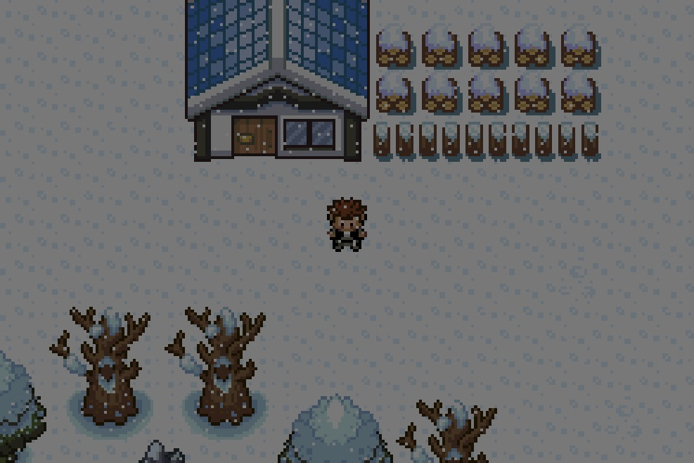

Region
Mando Region
Oaken Town
A modest town, ideal for any hero's upbringing. This is where your adventure begins. |
Lothorn VillageBeach route just south of Oaken. Enjoy the fishing mini-game here. |
Cobalt TownQuite town on the coast. Some suspect there are more houses than people who live here. |
Drexel CityEndo's capital is centered here. It is also the site of many threats from an aggressive group of Eco terrorists. |
Oaken WoodsDark, dense overgrowth making this an alluring landscape for luminescent bugs, and daring travelers. |
Oaken NorthThe cliffs behind Oaken Town. The grass is greener and the trainers are tougher. |
Scion CityEndo's high-tech metropolis. Many of its major corporations agglomerate here. Some, more clandestine than others. |
Noishire CityThis dry landscape is the hero's first stop in the Mandata Province. The villagers aren't happy to see an outsider due to ancestral resentment. |
Poison SwampThese toxic wastelands are where the monster that's been terrorizing Noishire City makes its nest. |
Northern PlateauThe never ceasing sandstorms and desolate climate discourage all but the bravest travelers. |
Vendetta TownA town it seems the world itself has forgotten. Surrounded on all sides by arduous terrain travelers seldom find this place. |
Cambrian ArchivesTunnels that trace back to the beginning of time. Creatures in a fossilized state can be found for resurrection. |
Solemn PassA massive looming mountain. Many travelers have sought its summit but few have returned. |
Coriolis Alps

Solemn Pass's icy peak. A snowy solace for weary travelers. |
Terranova CityMandata's capital city. The newer houses are being built as underground bunkers to keep civilians safe in case provincial conflict returns. |
Haunted Grove
The moaning of the trees in the wind is easily mistaken for the cries of restless revenants and sepulchral specters. |
Mandata RiverThe vicious currents and sea creatures have make this river nearly impassable. |
Tanga Village
Locals say their ancestors lived off the land here, but today it has turned into Mandata's suburbia. |
Wotmel TownhousesFishing and vacation villages. Tourists come from all across Mando to marvelous at the gorgeous Sapphire Bay. |
Sapphire BayIts namesake comes from the many sailors who nearly drowned looking for gemstones they hoped gave the tide its fascinating gleam. |
UnderwaterThis coral shelf is home to marvelous sea creatures, and valuable oil deposits. |
Moon LandingOne small step for our hero, one huge mission accomplished. Or, so it seems. |
Kelpsi City
The inhabitants drilled into the moon rock as this was cheaper than shipping in material for actual housing. |
Lunar GulchThis gigantic crater emits strange celestial energy that is likely to go undiagnosed for all eternity. |
Company HQHome of the mysterious organization that has had its eyes on our hero from the beginning. |
Wini WestA maze that requires a good deal of athletic ability, as there are sections that the hero can jump cinderblock to cinderblock |
Chaos CatacombsThe sacred resting place of the legendary dragons of order and chaos. The Wiki Settlement has kept its whereabouts hidden for years for fear the people of Mando would try and awaken the dragons. |